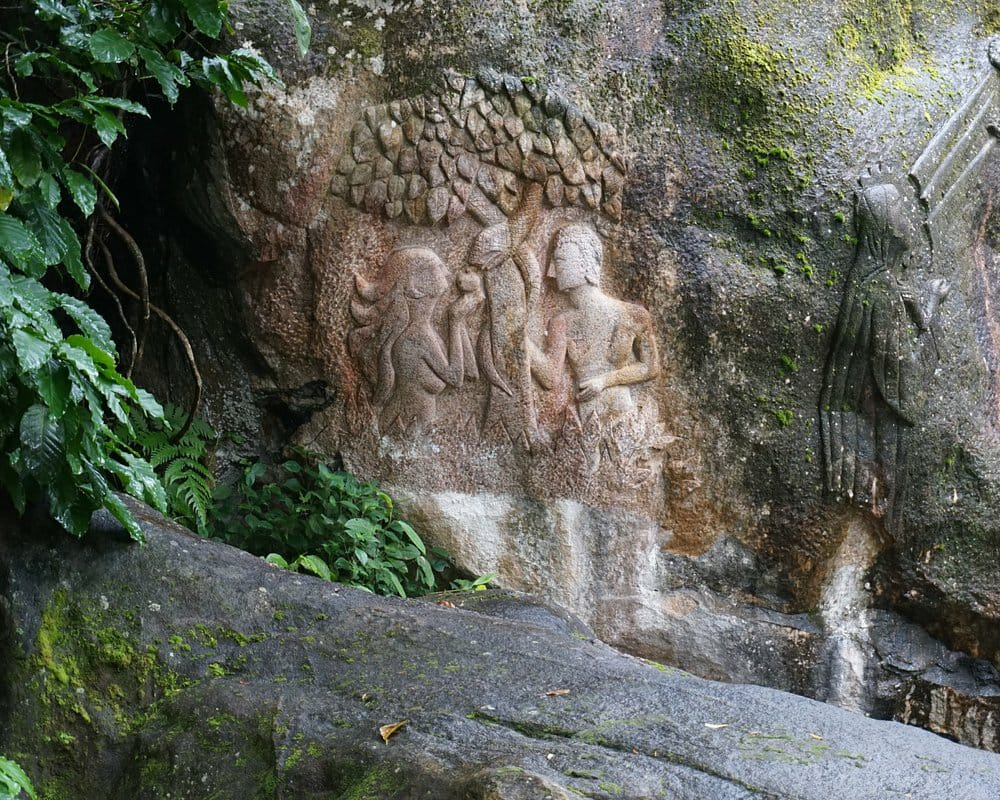

1 / 3

Wayanad
2 / 3

3 / 3
Year of formation : 1980, November 1 Headquarters : Kalpetta The only district in Kerala that shares border with two Indian states namely Tamil Nadu and Karnataka, is Wayanad. The Sulthanbathery taluk shares border with these states. Sultan Bathery is formerly known as 'Ganapathi Vattam'. The Banasur Sagar Dam is the biggest eastern dam in India. it is on the tributary of the Kabani River. The first fully completed ADHAR registration panchayat - Ambalavayal Kerala's first Tribal medical college is going to be started in Wayanad Muthanga is in Wayanad Edakkal caves and Ku ruva Island are situated in Wayanad Kuruva Island is in River Kabanni Lakkidi is known as 'Chirrapunji of Kerala'. Wayanad has the largest number of tribal population in Kerala. The district with no coastal areas and railway lines. Lakkidi known as the 'Chirapunji of Kerala', Edakkal caves, Bird Sanctuary called Pakshipathalam, Natural fresh water lake Pookode, Thirunelli temple known as 'Dakshina Kashi' and Muthanga Wildlife Sanctuary are in Wayanad district. Banasurankotta is located in Wayanad. Migration to Wayanad serves the theme for S.K. Pottekkatt's 'Vishakanyaka'. Wayanad leads in the production of pepper and coffee in Kerala. The first micro hydel project in Kerala is set up in Waynad district. Main Road : NH 212 (New NH No. 766)